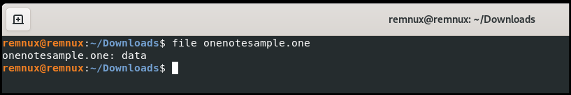

Posted By Asif Ali on Feb 24, 2024
OneNote attachments have become a attack vector for malware campaigns. In this article, we will perform a detailed analysis of a sample using REMnux and FlareVM. Malware families deploying through OneNote documents:
Opening my REMnux box and I have downloaded sample, checking for the type of the file looking at the magic bytes of the file.
extension for the OneNote file is .one and it shows data in REMnux.
Looking at the magic bytes of the file it is OneNote file, it is just to confirm on the type of malware which we will be carrying out our further analysis.